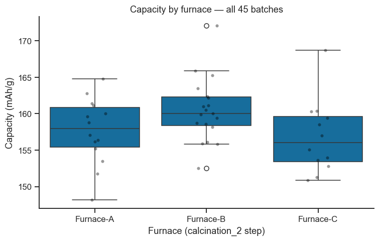

6. Live Tutorial 1: From Lab Notebook to Queryable Database — SQL and NoSQL in Practice#
Notebook 3 introduced the concepts — rows vs. documents, a relational
schema, a document store, and the trade-offs between them — using a
deliberately small, five-batch dataset so the mechanics stayed visible.
Today’s session is the payoff: a live investigation, using both
database styles at once, on a dataset that is actually big enough to need
a database in the first place — built end-to-end with the tools from
Part I (numpy for generating the data, pandas together with
sqlite3/mongomock for storing and querying it, matplotlib/seaborn
and plotly for looking at the result).
The scenario: since Notebook 3 left off, the lab has kept synthesising LiFePO4 cathode batches — 40 more of them, spread across three calcination furnaces. The process engineer has a hunch: one of the furnaces, overdue for calibration, might be quietly producing lower-capacity material. Your job today is to finish building the database that can actually answer that question, then answer it — once in SQL, once in MongoDB — and decide what to do about it.
Read the explanation, run the cell, look at the output, then do the linked exercise before moving on. Section 6.6 is marked Going further — useful, but not required for the core session.
Session plan
Growing the dataset — Part I’s
numpyrandom generator, at lab scaleFinishing the schema — adding the
instrumentstable live (Notebook 3’s Exercise 1)Querying like an analyst —
JOIN,GROUP BY, and the furnace mysteryThe same investigation in MongoDB — aggregation vs.
GROUP BYWhen schema flexibility bites — a live demonstration
Going further — indexing and query performance at scale
Summary: what to do about Furnace-C
6.1 Recap in 60 Seconds#
Notebook 3, Section 3.2 laid out the core choice: a relational
database (SQL) enforces one fixed set of columns per table upfront and
reunites related tables with JOIN; a document database (MongoDB)
lets every record carry its own, potentially nested shape, at the cost of
that upfront enforcement. Section 3.3–3.7 built the same five-batch
dataset both ways. Today reuses exactly those APIs
(sqlite3/SQLAlchemy, mongomock) — nothing new to install — just at a
scale, and with a real question, that makes the differences matter.
import numpy as np
import pandas as pd
import sqlite3
import mongomock
import matplotlib.pyplot as plt
import seaborn as sns
import plotly.express as px
import plotly.io as pio
# Emit plain HTML output (not the notebook-widget MIME type), so the
# plotly figure below renders correctly in the built Jupyter Book pages.
pio.renderers.default = "notebook_connected"
sns.set_theme(style='ticks', palette='colorblind')
plt.rcParams.update({'figure.dpi': 110, 'font.size': 11})
rng = np.random.default_rng(2026)
6.2 Growing the Dataset#
Notebook 3 hand-typed five batches as literal tuples — fine for showing
the mechanics of a schema, but nothing you would call “a database problem”
yet. A real lab generates data continuously; today we simulate the 40
batches synthesised since Notebook 3, using the same vectorised random
generation from Part I, Notebook 2 (rng = np.random.default_rng(...),
rng.uniform, rng.choice) instead of typing numbers by hand.
Two synthesis methods are used, same as before (solid-state reaction,
sol-gel), each with its own temperature range and its own true
relationship between calcination temperature and capacity. Every batch’s
critical calcination_2 step is run on one of three furnaces —
Furnace-A, Furnace-B, or Furnace-C — chosen at random, exactly
as it would be in a real lab where whichever furnace is free gets used
next.
methods = ['solid-state reaction', 'sol-gel']
furnace_pool = ['Furnace-A', 'Furnace-B', 'Furnace-C']
n_new = 40
new_batches = []
for i in range(n_new):
sample_id = f'batch_{10 + i}'
method = rng.choice(methods, p=[0.6, 0.4])
furnace = rng.choice(furnace_pool, p=[0.35, 0.35, 0.30])
if method == 'solid-state reaction':
calc2_temp = rng.uniform(700, 760)
base_capacity = 100 + 0.08 * calc2_temp
else:
calc2_temp = rng.uniform(630, 690)
base_capacity = 220 - 0.09 * calc2_temp
# Furnace-C is overdue for calibration -- a hidden systematic offset,
# exactly the kind of thing today's session is trying to uncover.
calibration_penalty = 4.5 if furnace == 'Furnace-C' else 0.0
capacity = base_capacity - calibration_penalty + rng.normal(0, 3.0)
efficiency = np.clip(0.85 + 0.0006 * capacity + rng.normal(0, 0.008), 0.80, 0.99)
new_batches.append({
'sample_id': sample_id,
'method': method,
'furnace': furnace,
'calc2_temp': round(float(calc2_temp), 1),
'capacity_mAh_g': round(float(capacity), 1),
'coulombic_efficiency': round(float(efficiency), 3),
})
df_preview = pd.DataFrame(new_batches)
print(f'{len(df_preview)} new batches generated since Notebook 3.')
df_preview.head()
40 new batches generated since Notebook 3.
| sample_id | method | furnace | calc2_temp | capacity_mAh_g | coulombic_efficiency | |
|---|---|---|---|---|---|---|
| 0 | batch_10 | solid-state reaction | Furnace-B | 728.0 | 162.4 | 0.953 |
| 1 | batch_11 | sol-gel | Furnace-C | 640.6 | 157.0 | 0.942 |
| 2 | batch_12 | sol-gel | Furnace-C | 668.2 | 155.1 | 0.944 |
| 3 | batch_13 | sol-gel | Furnace-B | 650.3 | 161.1 | 0.936 |
| 4 | batch_14 | solid-state reaction | Furnace-B | 739.8 | 158.7 | 0.950 |
Checkpoint / Exercise A: Change the random seed (np.random.default_rng(2026)
in Section 6.1) to a different integer and re-run Sections 6.1–6.2. Do the
number of Furnace-C batches change? Does the hidden calibration penalty
(4.5 mAh/g) change? Only one of the two should — which, and why?
6.3 Finishing the Schema: the instruments Table, Live#
Notebook 3’s Exercise 1 asked you to design, on paper, an instruments
table linked to synthesis_steps by a foreign key. Today we actually
build it — inside the same three-table relational schema as Notebook 3,
now with a fourth table and a new foreign-key column — and immediately
put it to work on the furnace question.
Each synthesis_steps row gets an instrument_id pointing at whichever
piece of equipment ran that step. Notice Furnace-C’s calibration date
below the moment the table prints — that is the process engineer’s whole
reason for suspicion, in one column.
conn = sqlite3.connect(':memory:')
conn.execute('PRAGMA foreign_keys = ON')
conn.executescript('''
CREATE TABLE instruments (
instrument_id INTEGER PRIMARY KEY,
name TEXT NOT NULL,
technique TEXT NOT NULL,
last_calibration_date TEXT NOT NULL
);
CREATE TABLE samples (
sample_id TEXT PRIMARY KEY,
material TEXT NOT NULL,
method TEXT NOT NULL,
atmosphere TEXT,
creator TEXT
);
CREATE TABLE synthesis_steps (
step_id INTEGER PRIMARY KEY AUTOINCREMENT,
sample_id TEXT NOT NULL REFERENCES samples(sample_id),
step_order INTEGER NOT NULL,
step_name TEXT NOT NULL,
temperature_C REAL,
duration_h REAL,
instrument_id INTEGER REFERENCES instruments(instrument_id)
);
CREATE TABLE results (
sample_id TEXT PRIMARY KEY REFERENCES samples(sample_id),
capacity_mAh_g REAL NOT NULL,
coulombic_efficiency REAL NOT NULL
);
''')
cur = conn.cursor()
cur.executemany(
'INSERT INTO instruments (instrument_id, name, technique, last_calibration_date) '
'VALUES (?, ?, ?, ?)',
[
(1, 'Mixer-1', 'mixing', '2025-06-01'),
(2, 'Furnace-A', 'calcination', '2025-05-01'),
(3, 'Furnace-B', 'calcination', '2025-04-12'),
(4, 'Furnace-C', 'calcination', '2024-09-05'), # overdue -- flagged by the process engineer
],
)
conn.commit()
print('Schema created: instruments, samples, synthesis_steps, results')
pd.read_sql_query('SELECT * FROM instruments', conn)
Schema created: instruments, samples, synthesis_steps, results
| instrument_id | name | technique | last_calibration_date | |
|---|---|---|---|---|
| 0 | 1 | Mixer-1 | mixing | 2025-06-01 |
| 1 | 2 | Furnace-A | calcination | 2025-05-01 |
| 2 | 3 | Furnace-B | calcination | 2025-04-12 |
| 3 | 4 | Furnace-C | calcination | 2024-09-05 |
Now insert every batch — Notebook 3’s original five (batch_05–batch_09,
now properly linked to instruments for the first time) plus today’s 40
new ones — the same executemany insert pattern as Notebook 3, Section
3.3, just looped over more rows. calcination_1 always runs on the same
dedicated preheat furnace (Furnace-A); mixing always runs on the lab’s
one mixer; only calcination_2 — the step under suspicion — varies.
FURNACE_ID = {'Furnace-A': 2, 'Furnace-B': 3, 'Furnace-C': 4}
original_batches = [
# (sample_id, method, calc2_temp, furnace, capacity, efficiency)
('batch_05', 'solid-state reaction', 700, 'Furnace-A', 148.2, 0.91),
('batch_06', 'solid-state reaction', 725, 'Furnace-B', 155.9, 0.93),
('batch_07', 'solid-state reaction', 750, 'Furnace-A', 161.4, 0.94),
('batch_08', 'sol-gel', 650, 'Furnace-B', 172.1, 0.95),
('batch_09', 'sol-gel', 680, 'Furnace-C', 168.7, 0.92),
]
all_batches = original_batches + [
(b['sample_id'], b['method'], b['calc2_temp'], b['furnace'],
b['capacity_mAh_g'], b['coulombic_efficiency'])
for b in new_batches
]
for sample_id, method, calc2_temp, furnace, capacity, efficiency in all_batches:
cur.execute(
'INSERT INTO samples (sample_id, material, method, atmosphere, creator) '
'VALUES (?, ?, ?, ?, ?)',
(sample_id, 'LiFePO4', method, 'Ar', 'A. Lindqvist'),
)
steps = [
(1, 'mixing', None, 2.0, 1),
(2, 'calcination_1', 350, 4.0, 2),
(3, 'calcination_2', calc2_temp, 6.0, FURNACE_ID[furnace]),
]
cur.executemany(
'INSERT INTO synthesis_steps '
'(sample_id, step_order, step_name, temperature_C, duration_h, instrument_id) '
'VALUES (?, ?, ?, ?, ?, ?)',
[(sample_id, *step) for step in steps],
)
cur.execute(
'INSERT INTO results (sample_id, capacity_mAh_g, coulombic_efficiency) '
'VALUES (?, ?, ?)',
(sample_id, capacity, efficiency),
)
conn.commit()
n_samples = cur.execute('SELECT COUNT(*) FROM samples').fetchone()[0]
n_steps = cur.execute('SELECT COUNT(*) FROM synthesis_steps').fetchone()[0]
print(f'{n_samples} samples, {n_steps} synthesis steps, all now linked to instruments.')
45 samples, 135 synthesis steps, all now linked to instruments.
Checkpoint / Exercise B: Write a JOIN between synthesis_steps and
instruments that lists every calcination_2 step alongside the furnace
that ran it, for batch_05–batch_09 only (WHERE sample_id IN (...)).
This is exactly the query Notebook 3’s Exercise 1 asked for — you can now
actually run it.
6.4 Querying Like an Analyst: the Furnace Mystery#
Time to investigate. A JOIN across all four tables reunites each
sample with its calcination_2 furnace and its measured capacity — the
same JOIN pattern as Notebook 3, Section 3.4, just spanning one more
table. Rather than a GROUP BY in SQL itself, we pull the unaggregated
per-batch rows into a DataFrame and use pandas’ .groupby() (Part I,
Notebook 3) to summarise — the two-step workflow (“filter and join in SQL,
aggregate and plot in pandas”) most real analyses actually use, because it
keeps the raw rows available for plotting afterwards too.
df_furnace = pd.read_sql_query('''
SELECT s.sample_id, s.method, i.name AS furnace,
st.temperature_C AS calc2_temp, r.capacity_mAh_g
FROM samples s
JOIN synthesis_steps st ON st.sample_id = s.sample_id AND st.step_name = 'calcination_2'
JOIN instruments i ON i.instrument_id = st.instrument_id
JOIN results r ON r.sample_id = s.sample_id
''', conn)
summary = df_furnace.groupby('furnace')['capacity_mAh_g'].agg(['count', 'mean', 'std']).round(2)
summary
| count | mean | std | |
|---|---|---|---|
| furnace | |||
| Furnace-A | 14 | 157.64 | 4.51 |
| Furnace-B | 19 | 160.48 | 4.37 |
| Furnace-C | 12 | 156.83 | 5.03 |
fig, ax = plt.subplots(figsize=(7, 4.5))
order = ['Furnace-A', 'Furnace-B', 'Furnace-C']
sns.boxplot(data=df_furnace, x='furnace', y='capacity_mAh_g', order=order, ax=ax)
sns.stripplot(data=df_furnace, x='furnace', y='capacity_mAh_g', order=order,
color='black', alpha=0.4, size=4, ax=ax)
ax.set_xlabel('Furnace (calcination_2 step)')
ax.set_ylabel('Capacity (mAh/g)')
ax.set_title(f'Capacity by furnace — all {len(df_furnace)} batches')
sns.despine(ax=ax)
plt.tight_layout()
plt.show()

The boxplot only shows two variables at once. To see whether the
furnace effect holds across the calcination-temperature range too, an
interactive plotly scatter (Part I, Notebook 5) is more useful here than
a static one — hover over any point below to see exactly which batch it
is.
fig_px = px.scatter(
df_furnace, x='calc2_temp', y='capacity_mAh_g', color='furnace',
hover_data=['sample_id', 'method'],
category_orders={'furnace': order},
title='Capacity vs. calcination temperature, coloured by furnace',
template='plotly_white',
)
fig_px.show()
Checkpoint / Exercise C: Redo the summary table above with a
two-level groupby(['method', 'furnace']) instead of just
groupby('furnace'). Does the Furnace-C gap hold up within both
synthesis methods separately, or mostly within one of them? That matters
for how confident the process engineer should be.
Take-home message
JOINreunites the normalised tables Notebook 3 split apart;GROUP BY(or, as used here,pandas.groupby()on the joined result) answers “compare X by category” questions — the single most common shape of real database question.Furnace-C’s mean capacity (156.8 mAh/g) is clearly lower than Furnace-B’s (160.5), but only slightly below Furnace-A’s (157.6) — a real but modest gap, not the dramatic split the process engineer’s hunch might suggest. That is exactly the situation a plot alone cannot resolve: is 156.8 vs. 157.6 a genuine (if small) furnace effect, or just batch-to-batch noise with only 12–19 samples per furnace? Notebook 8 (Hypothesis Testing, Part III) gives you the formal tool — a two-sample t-test or ANOVA — to actually answer that, rather than eyeballing a boxplot.
6.5 The Same Investigation in MongoDB#
Mirror all 45 batches into a MongoDB-style document collection — same
mongomock stand-in as Notebook 3, Section 3.6, same “embed the synthesis
history inside the sample” shape, now with an instrument field on each
step.
client = mongomock.MongoClient() # pymongo.MongoClient(...) against a real server
db = client['materials_lab']
coll = db['cathode_samples']
documents = []
for sample_id, method, calc2_temp, furnace, capacity, efficiency in all_batches:
documents.append({
'sample_id': sample_id,
'material': 'LiFePO4',
'method': method,
'atmosphere': 'Ar',
'steps': [
{'name': 'mixing', 'instrument': 'Mixer-1',
'duration_h': 2.0},
{'name': 'calcination_1', 'instrument': 'Furnace-A',
'temperature_C': 350, 'duration_h': 4.0},
{'name': 'calcination_2', 'instrument': furnace,
'temperature_C': calc2_temp, 'duration_h': 6.0},
],
'results': {
'capacity_mAh_g': capacity,
'coulombic_efficiency': efficiency,
},
})
coll.insert_many(documents)
print(coll.count_documents({}), 'documents inserted (5 from Notebook 3 + 40 new)')
45 documents inserted (5 from Notebook 3 + 40 new)
Grouping by furnace now needs one extra pipeline stage compared to
Notebook 3, Section 3.6: steps is an array, so $unwind first turns
each document’s step list into one pipeline document per step, then
$match keeps only the calcination_2 steps, and $group aggregates —
MongoDB’s equivalent of the JOIN + GROUP BY above, in one call.
pipeline = [
{'$unwind': '$steps'},
{'$match': {'steps.name': 'calcination_2'}},
{'$group': {
'_id': '$steps.instrument',
'n_batches': {'$sum': 1},
'mean_capacity': {'$avg': '$results.capacity_mAh_g'},
}},
]
df_mongo_furnace = (
pd.DataFrame(list(coll.aggregate(pipeline)))
.rename(columns={'_id': 'furnace'})
.sort_values('furnace')
.reset_index(drop=True)
)
df_mongo_furnace.round(2)
| n_batches | mean_capacity | furnace | |
|---|---|---|---|
| 0 | 14 | 157.64 | Furnace-A |
| 1 | 19 | 160.48 | Furnace-B |
| 2 | 12 | 156.83 | Furnace-C |
Same question, two completely different query languages — they had
better agree. This is exactly the kind of cross-check numpy.allclose
(Part I, Notebook 2) is for: comparing two floating-point results without
demanding bit-for-bit equality.
sql_means = summary['mean'].sort_index()
mongo_means = df_mongo_furnace.set_index('furnace')['mean_capacity'].sort_index()
print('SQL means: ', np.round(sql_means.values, 2))
print('Mongo means:', np.round(mongo_means.values, 2))
print('SQL and MongoDB agree:', np.allclose(sql_means.values, mongo_means.values, atol=0.01))
SQL means: [157.64 160.48 156.83]
Mongo means: [157.64 160.48 156.83]
SQL and MongoDB agree: True
6.6 When Schema Flexibility Bites — Live#
A rushed technician logs one more Furnace-C batch, batch_50 — but
mistypes the step name as 'clacination_2'. Nothing in MongoDB’s document
model stops this insert; there is no fixed column list to violate.
sloppy_doc = {
'sample_id': 'batch_50',
'material': 'LiFePO4',
'method': 'sol-gel',
'atmosphere': 'Ar',
'steps': [
{'name': 'mixing', 'instrument': 'Mixer-1', 'duration_h': 2.0},
{'name': 'calcination_1', 'instrument': 'Furnace-A', 'temperature_C': 350, 'duration_h': 4.0},
{'name': 'clacination_2', 'instrument': 'Furnace-C', 'temperature_C': 655, 'duration_h': 6.0}, # typo!
],
'results': {'capacity_mAh_g': 158.9, 'coulombic_efficiency': 0.91},
}
coll.insert_one(sloppy_doc)
print(coll.count_documents({}), 'documents now — batch_50 accepted with no error at all.')
df_after = (
pd.DataFrame(list(coll.aggregate(pipeline)))
.rename(columns={'_id': 'furnace'})
.set_index('furnace')
.sort_index()
)
print()
print('Furnace-C count before batch_50:', int(summary.loc['Furnace-C', 'count']))
print('Furnace-C count after inserting batch_50:', int(df_after.loc['Furnace-C', 'n_batches']))
print('batch_50 is genuinely in the database, but invisible to the exact-match')
print("$match: {'steps.name': 'calcination_2'} stage -- the furnace investigation")
print('silently ran on incomplete data, and nothing in MongoDB flagged it.')
46 documents now — batch_50 accepted with no error at all.
Furnace-C count before batch_50: 12
Furnace-C count after inserting batch_50: 12
batch_50 is genuinely in the database, but invisible to the exact-match
$match: {'steps.name': 'calcination_2'} stage -- the furnace investigation
silently ran on incomplete data, and nothing in MongoDB flagged it.
Is this really “SQL good, MongoDB bad”? Not quite — try the same two mistakes against the relational schema and see which one SQLite actually catches.
Mistake 1: an invalid reference (instrument_id pointing at an
instrument that doesn’t exist) — this is exactly what the FOREIGN KEY
constraint exists to prevent, in either database style (a real MongoDB
schema would need equivalent application-level validation to catch it,
since mongomock/MongoDB have no native foreign keys at all).
try:
cur.execute(
"INSERT INTO synthesis_steps "
"(sample_id, step_order, step_name, temperature_C, duration_h, instrument_id) "
"VALUES ('batch_09', 4, 'calcination_2', 655, 6.0, 40)" # instrument_id 40 doesn't exist
)
conn.commit()
except sqlite3.IntegrityError as e:
print('Rejected immediately:', e)
Rejected immediately: FOREIGN KEY constraint failed
Mistake 2: the same spelling typo as batch_50’s — this one is
not a foreign-key problem, it’s a plain text column with no constraint
saying which strings are valid.
cur.execute(
"INSERT INTO synthesis_steps "
"(sample_id, step_order, step_name, temperature_C, duration_h, instrument_id) "
"VALUES ('batch_09', 5, 'clacination_2', 655, 6.0, 4)"
)
conn.commit()
print('Accepted without complaint -- step_name has no CHECK constraint, so plain SQLite')
print('is just as blind to this specific typo as MongoDB was.')
Accepted without complaint -- step_name has no CHECK constraint, so plain SQLite
is just as blind to this specific typo as MongoDB was.
Take-home message
The real lesson isn’t “SQL enforces everything, MongoDB enforces nothing” — it’s that each database only enforces exactly what you told it to. A
FOREIGN KEYprotects referential integrity (Mistake 1) in SQL; MongoDB has no native equivalent and needs application-level validation (Notebook 4’svalidate_entryfunction is exactly that pattern) to get the same guarantee.Neither database protects you from a free-text typo (Mistake 2) unless you explicitly add something to catch it — a
CHECKconstraint or a lookup table in SQL, a validation function before everyinsert_onein MongoDB. “Which database did I choose?” matters less here than “what did I actually tell it to enforce?”Exercise (Core practice, below) asks you to close exactly this gap with a
CHECKconstraint.
6.7 Going Further: Indexing and Query Performance at Scale#
Everything above ran instantly because 45 rows is nothing for a database
to search — it can just scan the whole table every time. A real lab
accumulates thousands of synthesis steps over the years; at that scale,
how a database finds matching rows starts to matter. Simulate that
scale directly, generating 200,000 synthetic rows the same vectorised way
as Section 6.2, and time a lookup query before and after adding an
index — a separate, sorted structure the database can binary-search
instead of scanning row by row — using time.perf_counter(), the same
timing tool Part I, Notebook 1 used for comparing implementations.
import time
conn2 = sqlite3.connect(':memory:')
conn2.execute(
'CREATE TABLE big_steps (id INTEGER PRIMARY KEY, sample_id TEXT, '
'instrument_id INTEGER, capacity_mAh_g REAL)'
)
n_big = 200_000
big_instrument_ids = rng.integers(1, 5, size=n_big)
big_capacity = rng.normal(160, 8, size=n_big)
cur2 = conn2.cursor()
cur2.executemany(
'INSERT INTO big_steps (sample_id, instrument_id, capacity_mAh_g) VALUES (?, ?, ?)',
[(f'sim_{i}', int(iid), float(cap))
for i, (iid, cap) in enumerate(zip(big_instrument_ids, big_capacity))],
)
conn2.commit()
print(f'{n_big:,} synthetic step rows inserted (simulating years of accumulated lab data).')
200,000 synthetic step rows inserted (simulating years of accumulated lab data).
n_repeat = 20
target = 'sim_150000' # a single, specific row -- the realistic case: "look up this one sample"
t0 = time.perf_counter()
for _ in range(n_repeat):
cur2.execute('SELECT capacity_mAh_g FROM big_steps WHERE sample_id = ?', (target,)).fetchone()
t_no_index = (time.perf_counter() - t0) / n_repeat
cur2.execute('CREATE INDEX idx_sample_id ON big_steps(sample_id)')
t0 = time.perf_counter()
for _ in range(n_repeat):
cur2.execute('SELECT capacity_mAh_g FROM big_steps WHERE sample_id = ?', (target,)).fetchone()
t_with_index = (time.perf_counter() - t0) / n_repeat
print(f'Without index: {t_no_index*1e6:8.1f} µs/query (average of {n_repeat} runs)')
print(f'With index: {t_with_index*1e6:8.1f} µs/query (average of {n_repeat} runs)')
print(f'Speedup: {t_no_index/t_with_index:.1f}x')
Without index: 5489.0 µs/query (average of 20 runs)
With index: 6.0 µs/query (average of 20 runs)
Speedup: 921.0x
plan = cur2.execute(
"EXPLAIN QUERY PLAN SELECT capacity_mAh_g FROM big_steps WHERE sample_id = 'sim_150000'"
).fetchall()
for row in plan:
print(row)
print()
print('SEARCH ... USING INDEX confirms SQLite used the B-tree index instead of scanning')
print('all 200,000 rows -- before CREATE INDEX, this would instead read \'SCAN big_steps\'.')
(3, 0, 62, 'SEARCH big_steps USING INDEX idx_sample_id (sample_id=?)')
SEARCH ... USING INDEX confirms SQLite used the B-tree index instead of scanning
all 200,000 rows -- before CREATE INDEX, this would instead read 'SCAN big_steps'.
Take-home message
Indexing trades a small amount of storage and slower writes for much faster reads on the indexed column — worth it for a column you filter on often (
sample_idhere), not worth it for columns you rarely search directly.The speedup above depends on selectivity:
sample_idhas 200,000 distinct values, so an index narrows the search from “scan everything” to “look up one row” almost immediately. A column likeinstrument_id(only 4 distinct values) selects roughly a quarter of the table either way — indexing it would help far less. Deeper-practice Exercise 1 (below) asks you to check this directly.mongomockis a pure-Python reference implementation with no real index data structures, so this benchmark cannot be reproduced with it — but a real MongoDB server’sdb.collection.create_index()gives the same benefit, and.explain()is Mongo’s equivalent ofEXPLAIN QUERY PLAN.
6.8 Summary: What to Do About Furnace-C#
So — is Furnace-C the culprit? Across all 45 batches, Furnace-C’s mean
capacity (156.8 mAh/g) is clearly below Furnace-B’s (160.5) and slightly
below Furnace-A’s (157.6) — a real but modest gap, and one that survived
being computed two independent ways (SQL JOIN+GROUP BY and a MongoDB
aggregation pipeline, Section 6.4–6.5). Checkpoint C asked you to check
whether it holds within both synthesis methods separately — with only
12–19 samples per furnace, that check matters. This is suggestive, not
proof — Notebook 8 (Hypothesis Testing, Part III) is where you get the
formal tool to turn “looks a bit lower” into “is statistically different.”
The honest recommendation today is: flag Furnace-C for recalibration
regardless (its calibration date alone justifies that), and re-run the
comparison with a proper hypothesis test once you get to Notebook 8 before
treating the gap as confirmed.
What today added on top of Notebook 3 |
Where |
|---|---|
A realistic scale (45 batches, not 5) generated with Part I’s |
6.2 |
The |
6.3 |
A real cross-table investigation, cross-checked between SQL and MongoDB |
6.4–6.5 |
An honest, non-partisan look at what each schema does and doesn’t enforce |
6.6 |
What changes at real-lab scale: indexing and query performance |
6.7 |
Next up, Notebook 7 takes the same “query, build a DataFrame, plot” workflow outside your own laptop entirely, against the real, public NOMAD repository.
Exercises#
(Checkpoints A–C are inline above, at the point in the notebook where you have the context to attempt them. The following are additional practice beyond the core session.)
Core practice
Close the typo gap in SQL: Add a
CHECKconstraint tosynthesis_steps.step_namerestricting it to('mixing', 'calcination_1', 'calcination_2')(SQLite supportsCHECKinCREATE TABLE). Re-attempt the'clacination_2'insert from Section 6.6, Mistake 2 — confirm it is now rejected.Close the typo gap in MongoDB: Write a small Python function
validate_step(doc)that checks every entry indoc['steps']has anamein the same allowed set, and call it beforeinsert_one— the application-level enforcement MongoDB does not give you for free (compare to Notebook 4’svalidate_entry). Confirm it catchesbatch_50’s typo.Two-level breakdown, written up: Using Checkpoint C’s
groupby(['method', 'furnace'])result, write 2–3 sentences summarising what you would tell the process engineer: is Furnace-C’s effect consistent across both synthesis methods, or concentrated in one?
Deeper practice
Selectivity matters: Repeat the Section 6.7 benchmark, but index
instrument_idinstead ofsample_id, and time a query filtering oninstrument_id = 4. Is the speedup as large as it was forsample_id? Explain the difference in terms of how many rows each query actually matches.From this notebook to a real, shared lab database: Describe (2–3 sentences each) what would need to change to run today’s SQL section against a real, shared PostgreSQL server instead of in-memory SQLite (Notebook 3, Section 3.5 already showed you the one line), and what would need to change to run the MongoDB section against a real MongoDB server instead of
mongomock(hint: only the client constructor).